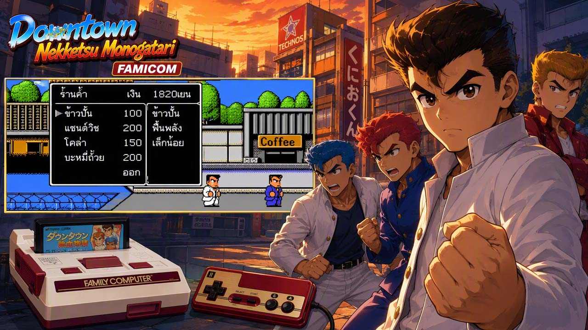
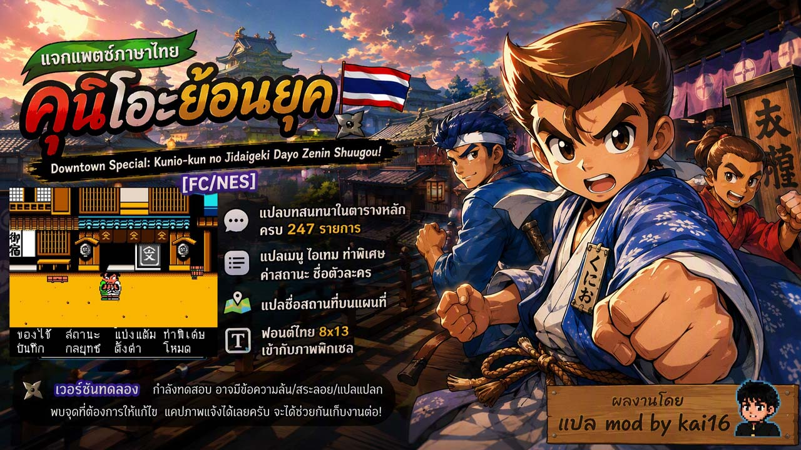

คู่มือ PDF
PlayStation 5 / Xbox Series X|S
Grand Theft Auto VI
บทสรุปภาษาไทย 200 หน้า
ดูรายละเอียดKAI16 / GAME LIBRARY
แพตช์และคู่มือเกมภาษาไทย จากเพจแปล mod by kai16
5 เกม
PlayStation 5 / Xbox Series X|S
บทสรุปภาษาไทย 200 หน้า
ดูรายละเอียด แพตช์ภาษาไทย
แพตช์ภาษาไทยPlayStation
ตราประทับแห่งเงือก
ดูรายละเอียด แพตช์ภาษาไทย
แพตช์ภาษาไทยPlayStation
สืบสวนไซไฟฉบับภาษาไทย
ดูรายละเอียด
แพตช์ภาษาไทยFamicom / NES
คุนิโอะดาวน์ทาวน์
ดูรายละเอียด
แพตช์ภาษาไทยFamicom / NES
Downtown Special
ดูรายละเอียดไม่พบเกมที่ตรงกับตัวกรอง